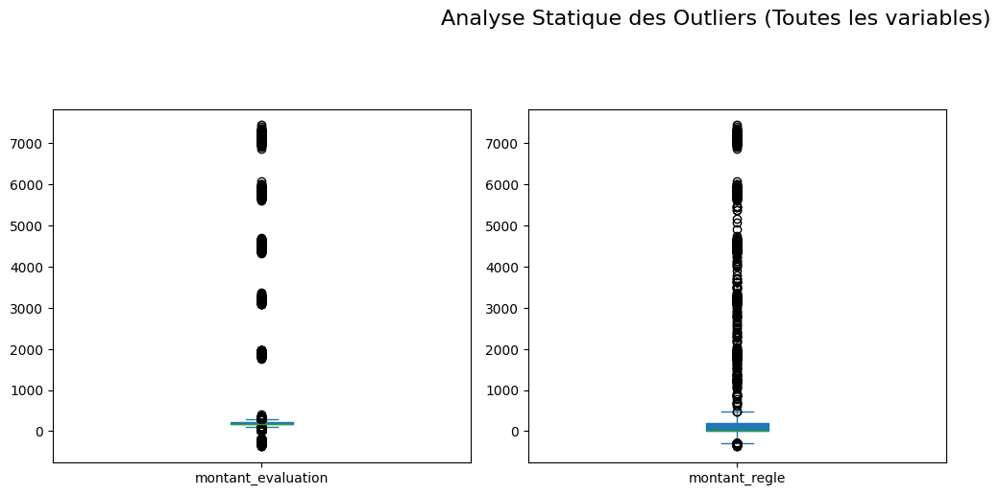

import pandas as pd
from itables import show
from pandas.api.types import CategoricalDtype
import plotly.graph_objects as go
import matplotlib.pyplot as plt
import missingno as msnoPréparation des données – Sinistres automobiles chez ENSAssuRances
ROY Tao
2026-03-29
Introduction
Ce document présente le processus complet de préparation et de nettoyage des données issues de la base Sinistre.
L’objectif de cette étape est de produire un jeu de données propre, cohérent et exploitable pour les analyses statistiques.
Les principales étapes de préparation sont :
import et inspection initiale des données
rennomage des colonnes
nettoyage du contenu des variables qualitatives
nettoyage du contenu des variables quantitatives
Conversion des dates et tests de cohérences
Détections et suppression des doublons
analyse et traitement des valeurs manquantes
1. Chargement des librairies
Les bibliothèques suivantes sont utilisées pour la manipulation, la visualisation et le nettoyage des données :
2. Importation des données
Les données sont importées depuis un fichier xlsx.
df_brut = pd.read_excel("data/Sinistre.xlsx")On fait une inspection de la table chargée :
show(df_brut.head(100),
scrollX=True,
lengthMenu=[5, 10, 25, 50],
pageLength=5,
classes="cell-border stripe")| Loading ITables v2.7.3 from the internet... (need help?) |
print(f"Dimensions : {df_brut.shape}") # (Lignes, Colonnes)
print("-" * 30)
df_brut.info()
display(df_brut.head(3).T) # Aperçu transposé des 3 premières lignesDimensions : (72130, 8)
------------------------------
<class 'pandas.DataFrame'>
RangeIndex: 72130 entries, 0 to 72129
Data columns (total 8 columns):
# Column Non-Null Count Dtype
--- ------ -------------- -----
0 idx_sin 72130 non-null str
1 gar_sin 72130 non-null str
2 surv_sin 72130 non-null str
3 decl_sin 72130 non-null str
4 clo_sin 33031 non-null str
5 gest_sin 72130 non-null str
6 mt_eval 72130 non-null float64
7 mt_regl 72130 non-null float64
dtypes: float64(2), str(6)
memory usage: 4.4 MB| 0 | 1 | 2 | |
|---|---|---|---|
| idx_sin | S18-0043146 | S18-0043146 | S18-0043146 |
| gar_sin | AssVHR | AssVHR | AssVHR |
| surv_sin | 2018-12-08 | 2018-12-08 | 2018-12-08 |
| decl_sin | 2018-12-10 | 2018-12-10 | 2018-12-10 |
| clo_sin | NaN | NaN | 2019-08-05 |
| gest_sin | 2018-12-10 | 2018-12-31 | 2019-08-05 |
| mt_eval | 170.0 | 170.0 | 262.86 |
| mt_regl | 0.0 | 0.0 | 262.86 |
3. Rennomage des colonnes
Pour une utilisation plus simple de la donnée on va modifier le nom des colonnes comme ceci :
# Création du dictionnaire pour la table Sinistres (8 variables)
data_sinistres_complet = {
"Nom d'origine": ["idx sin", "gar_sin", "surv sin", "decl sin", "clo sin", "gest_sin", "mt_eval", "mt_regl"],
"Nouveau nom": [
"id_sinistre", "type_garantie_sinistree", "date_survenance", "date_declaration",
"date_cloture", "date_gestion", "montant_evaluation", "montant_regle"
],
"Type": ["texte", "texte", "texte", "texte", "texte", "texte", "decimal", "decimal"],
"Description": [
"Identifiant sinistre",
"Garantie sinistrée (Base, 0km, VHR)",
"Date de survenance",
"Date de déclaration",
"Date de clôture",
"Date de gestion",
"Montant évaluation",
"Montant réglé"
]
}
df_dico_sinistres = pd.DataFrame(data_sinistres_complet)
print("DICTIONNAIRE DES DONNÉES - SINISTRES")
display(df_dico_sinistres)DICTIONNAIRE DES DONNÉES - SINISTRES| Nom d'origine | Nouveau nom | Type | Description | |
|---|---|---|---|---|
| 0 | idx sin | id_sinistre | texte | Identifiant sinistre |
| 1 | gar_sin | type_garantie_sinistree | texte | Garantie sinistrée (Base, 0km, VHR) |
| 2 | surv sin | date_survenance | texte | Date de survenance |
| 3 | decl sin | date_declaration | texte | Date de déclaration |
| 4 | clo sin | date_cloture | texte | Date de clôture |
| 5 | gest_sin | date_gestion | texte | Date de gestion |
| 6 | mt_eval | montant_evaluation | decimal | Montant évaluation |
| 7 | mt_regl | montant_regle | decimal | Montant réglé |
# Dictionnaire de renommage pour la table Sinistres
mapping_sinistres = {
"idx_sin": "id_sinistre",
"gar_sin": "type_garantie_sinistree",
"surv_sin": "date_survenance",
"decl_sin": "date_declaration",
"clo_sin": "date_cloture",
"gest_sin": "date_gestion",
"mt_eval": "montant_evaluation",
"mt_regl": "montant_regle"
}
# Application du renommage (remplace df_sinistres par ton nom de variable)
df_prep = df_brut.rename(columns=mapping_sinistres)--------------------------------------------------------------------------- NameError Traceback (most recent call last) Cell In[1], line 14 2 mapping_sinistres = { 3 "idx_sin": "id_sinistre", 4 "gar_sin": "type_garantie_sinistree", (...) 10 "mt_regl": "montant_regle" 11 } 13 # Application du renommage (remplace df_sinistres par ton nom de variable) ---> 14 df_prep = df_brut.rename(columns=mapping_sinistres) NameError: name 'df_brut' is not defined
Nouveaux noms des 8 colonnes :
df_prep.columnsIndex(['idx_sin', 'type_garantie_sinistree', 'date_survenance',
'date_declaration', 'date_cloture', 'date_gestion',
'montant_evaluation', 'montant_regle'],
dtype='str')4. Nettoyage du contenu des variables qualitatives
4.1 Normalisation de la colonne type_garantie_sinistree
df_prep['type_garantie_sinistree'].value_counts()type_garantie_sinistree
AssBase 57685
Ass0km 8575
AssVHR 5870
Name: count, dtype: int64On voit que l’on a bien nos 3 catégories cependant on va changer le nom des valeurs pour qu’elles soient plus explicite :
# Définition de la correspondance (Mapping)
# Basé sur ton dictionnaire : AssBase, Assokm, AssVHR
mapping_garanties = {
"AssBase": "Assistance de base",
"Ass0km": "Assistance 0 km",
"AssVHR": "Véhicule de remplacement"
}
# Application de la transformation
df_prep['type_garantie_sinistree'] = df_prep['type_garantie_sinistree'].replace(mapping_garanties)
# Vérification du nouveau "table()"
print(df_prep['type_garantie_sinistree'].value_counts())type_garantie_sinistree
Assistance de base 57685
Assistance 0 km 8575
Véhicule de remplacement 5870
Name: count, dtype: int645. Nettoyage du contenu des variables quantitatives
Maintenant nous allons travailler sur les problème de cohérence et de valeur abberante sur les variables numérique.
Voici les informations que nous avons concernant les différentes variables avant modification :
# Sélection de tes variables numériques spécifiques
cols_numeriques = [
'montant_evaluation', 'montant_regle'
]
diagnostic_num = df_prep[cols_numeriques]
print("RÉSUMÉ STATISTIQUE DES VARIABLES NUMÉRIQUES")
display(diagnostic_num.describe().T)
# Vérification des valeurs manquantes
print("\nVALEURS MANQUANTES (NA) :")
print(diagnostic_num.isnull().sum())RÉSUMÉ STATISTIQUE DES VARIABLES NUMÉRIQUES| count | mean | std | min | 25% | 50% | 75% | max | |
|---|---|---|---|---|---|---|---|---|
| montant_evaluation | 72130.0 | 254.449224 | 633.716936 | -369.99 | 170.0 | 185.16 | 215.00 | 7429.16 |
| montant_regle | 72130.0 | 157.651405 | 661.917351 | -369.99 | 0.0 | 0.00 | 191.34 | 7429.16 |
VALEURS MANQUANTES (NA) :
montant_evaluation 0
montant_regle 0
dtype: int64# Correction de la grille pour accueillir les 12 variables
df_prep[cols_numeriques].plot(
kind='box',
subplots=True,
layout=(4, 3), # 4 lignes, 3 colonnes = 12 places
figsize=(15, 18), # On augmente la hauteur (18) pour que ce soit lisible
patch_artist=True
)
plt.suptitle("Analyse Statique des Outliers (Toutes les variables)", fontsize=16)
plt.tight_layout(rect=[0, 0.03, 1, 0.95]) # Ajuste pour ne pas chevaucher le titre
plt.show()
Après une analyse des différentes variables il ne semble pas y avoir besoin d’apporter de modification.
6. Conversion des dates et tests de cohérence
6.1 Conversion des dates
Les dates des données ne sont pas de type date il faut donc les convertir.
# Conversion des colonnes en objets Datetime
cols_dates = ['date_survenance','date_declaration', 'date_cloture', 'date_gestion']
for col in cols_dates:
df_prep[col] = pd.to_datetime(df_prep[col], dayfirst=True, errors='coerce')
# Diagnostic après conversion (équivalent de glimpse)
print("TYPES DES COLONNES APRÈS CONVERSION :")
print(df_prep[cols_dates].dtypes)
print("\nAPERÇU DES DONNÉES :")
display(df_prep[cols_dates].head())TYPES DES COLONNES APRÈS CONVERSION :
date_survenance datetime64[us]
date_declaration datetime64[us]
date_cloture datetime64[us]
date_gestion datetime64[us]
dtype: object
APERÇU DES DONNÉES :| date_survenance | date_declaration | date_cloture | date_gestion | |
|---|---|---|---|---|
| 0 | 2018-08-12 | 2018-10-12 | NaT | 2018-10-12 |
| 1 | 2018-08-12 | 2018-10-12 | NaT | NaT |
| 2 | 2018-08-12 | 2018-10-12 | 2019-05-08 | 2019-05-08 |
| 3 | NaT | NaT | NaT | NaT |
| 4 | NaT | NaT | NaT | NaT |
6.2 Tests de cohérence sur les dates
On vérifie si les dates sont cohérentes entre elles.
Voici les informations que l’on a sur les dates :
summary_dates = df_prep[cols_dates].describe().T
print("RÉSUMÉ STATISTIQUE DES DATES ET DÉLAIS :")
display(summary_dates)RÉSUMÉ STATISTIQUE DES DATES ET DÉLAIS :| count | mean | min | 25% | 50% | 75% | max | |
|---|---|---|---|---|---|---|---|
| date_survenance | 28334 | 2021-07-28 19:49:32.852403 | 2018-01-09 00:00:00 | 2020-02-10 00:00:00 | 2021-09-09 00:00:00 | 2023-02-09 00:00:00 | 2023-12-12 00:00:00 |
| date_declaration | 28362 | 2021-08-04 06:56:53.412312 | 2018-01-09 00:00:00 | 2020-02-11 00:00:00 | 2021-10-01 00:00:00 | 2023-02-11 00:00:00 | 2023-12-12 00:00:00 |
| date_cloture | 12851 | 2021-09-13 04:15:42.370243 | 2018-01-10 00:00:00 | 2020-05-09 00:00:00 | 2021-11-03 00:00:00 | 2023-03-02 00:00:00 | 2023-12-12 00:00:00 |
| date_gestion | 25531 | 2021-09-05 06:16:12.088833 | 2018-01-09 00:00:00 | 2020-04-09 00:00:00 | 2021-11-01 00:00:00 | 2023-03-04 00:00:00 | 2023-12-12 00:00:00 |
Nous allons mettre en place plusieurs contrôle de cohérence et en cas de non respect nous allons remplacer les valeurs par des NA pour le moment.
Les contrôles sont :
- La déclaration ne peut pas être avant la survenance (le sinistre)
- On ne peut pas clôturer un dossier avant de l’avoir déclaré
- La gestion commence normalement à la déclaration ou après
print("\nNOMBRE DE VALEURS MANQUANTES (NA) AVANT CORRECTION :")
print(df_prep[['date_survenance', 'date_declaration', 'date_cloture', 'date_gestion']].isnull().sum())
NOMBRE DE VALEURS MANQUANTES (NA) AVANT CORRECTION :
date_survenance 43796
date_declaration 43781
date_cloture 60923
date_gestion 48252
dtype: int64# --- TEST 1 : Déclaration vs Survenance ---
# La déclaration ne peut pas être avant la survenance (le sinistre)
mask_decl_avant_surv = df_prep['date_declaration'] < df_prep['date_survenance']
print(f"Anomalies Déclaration < Survenance : {mask_decl_avant_surv.sum()}")
# --- TEST 2 : Clôture vs Déclaration ---
# On ne peut pas clôturer un dossier avant de l'avoir déclaré
mask_cloture_avant_decl = df_prep['date_cloture'] < df_prep['date_declaration']
print(f"Anomalies Clôture < Déclaration : {mask_cloture_avant_decl.sum()}")
# --- TEST 3 : Gestion vs Déclaration ---
# La gestion commence normalement à la déclaration ou après
mask_gestion_avant_decl = df_prep['date_gestion'] < df_prep['date_declaration']
print(f"Anomalies Gestion < Déclaration : {mask_gestion_avant_decl.sum()}")
# --- APPLICATION DES NA ---
# On remplace par NaT (Not a Time) les dates incohérentes
df_prep.loc[mask_decl_avant_surv, 'date_declaration'] = pd.NaT
df_prep.loc[mask_cloture_avant_decl, 'date_cloture'] = pd.NaT
df_prep.loc[mask_gestion_avant_decl, 'date_gestion'] = pd.NaT
# --- VÉRIFICATION FINALE ---
print("\nNOMBRE DE VALEURS MANQUANTES (NA) APRÈS CORRECTION :")
print(df_prep[['date_survenance', 'date_declaration', 'date_cloture', 'date_gestion']].isnull().sum())Anomalies Déclaration < Survenance : 13
Anomalies Clôture < Déclaration : 1644
Anomalies Gestion < Déclaration : 1653
NOMBRE DE VALEURS MANQUANTES (NA) APRÈS CORRECTION :
date_survenance 43796
date_declaration 43781
date_cloture 60923
date_gestion 48252
dtype: int647. Détection et suppression des doublons
Certaines lignes peuvent être strictement identiques suite à des erreurs d’import ou de saisie.
df_doublons = df_prep[df_prep.duplicated(keep=False)]
print(f"Nombre de lignes concernées par des doublons : {len(df_doublons)}")
# 2. Comptage avant nettoyage
n_avant = len(df_prep)
print(f"Nombre total de lignes avant nettoyage : {n_avant}")
# 3. Suppression des doublons
df_prep = df_prep.drop_duplicates()
# 4. Comptage après nettoyage
n_apres = len(df_prep)
print(f"Nombre total de lignes après nettoyage : {n_apres}")
print(f"Nombre de lignes uniques supprimées : {n_avant - n_apres}")Nombre de lignes concernées par des doublons : 9324
Nombre total de lignes avant nettoyage : 72130
Nombre total de lignes après nettoyage : 67452
Nombre de lignes uniques supprimées : 46788. Analyse des données manquantes
Les valeurs manquantes peuvent provenir :
d’erreurs de mesure
d’informations non disponibles
d’erreurs de saisie
Une analyse détaillée est donc nécessaire.
8.1 Résumé des valeurs manquantes
Voici les valeurs manquantes et la proportion quelle représente :
# 1. Calcul du nombre de NA par variable
n_miss = df_prep.isnull().sum()
# 2. Calcul du pourcentage de NA
pct_miss = (n_miss / len(df_prep)) * 100
# 3. Création du tableau de synthèse (équivalent miss_var_summary)
miss_var_summary = pd.DataFrame({
'variable': n_miss.index,
'n_miss': n_miss.values,
'pct_miss': pct_miss.values
})
# 4. Tri par ordre décroissant de manquants
miss_var_summary = miss_var_summary.sort_values(by='n_miss', ascending=False).reset_index(drop=True)
print("RÉSUMÉ DES VARIABLES MANQUANTES :")
display(miss_var_summary)RÉSUMÉ DES VARIABLES MANQUANTES :| variable | n_miss | pct_miss | |
|---|---|---|---|
| 0 | date_cloture | 56245 | 83.385222 |
| 1 | date_gestion | 43574 | 64.600012 |
| 2 | date_survenance | 39689 | 58.840361 |
| 3 | date_declaration | 39126 | 58.005693 |
| 4 | idx_sin | 0 | 0.000000 |
| 5 | type_garantie_sinistree | 0 | 0.000000 |
| 6 | montant_evaluation | 0 | 0.000000 |
| 7 | montant_regle | 0 | 0.000000 |
On laissera les date pour lesquels il manque la donnée tel quel car on ne pourra pas procédé par imputation et les supprimé reviendrais à supprimer trop de ligne. De plus le reste des informations peut être utile.
Ainsi, nous n’avons aucun travail d’imputation ou de suppression de ligne à faire car il ne manque aucune valeurs dans les variable qui ne sont pas de type date.
Conclusion
Désormais le jeu de données obtenu est cohérent, propre et prêt pour l’analyse exploratoire et la modélisation statistique.
Dernière information sur la table nettoyé :
# On définit le DataFrame final
df_final = df_prep.copy()
# Nombre de lignes et colonnes (équivalent ncol et nrow)
print(f"Nombre de colonnes : {df_final.shape[1]}")
print(f"Nombre de lignes : {df_final.shape[0]}")
print("-" * 30)
# Équivalent de glimpse() : donne le type, les non-nuls et un aperçu
print("DERNIÈRE INFORMATION SUR LA TABLE NETTOYÉE :")
df_final.info()
# Aperçu des premières lignes
display(df_final.head())Nombre de colonnes : 8
Nombre de lignes : 67452
------------------------------
DERNIÈRE INFORMATION SUR LA TABLE NETTOYÉE :
<class 'pandas.DataFrame'>
Index: 67452 entries, 0 to 72129
Data columns (total 8 columns):
# Column Non-Null Count Dtype
--- ------ -------------- -----
0 idx_sin 67452 non-null str
1 type_garantie_sinistree 67452 non-null str
2 date_survenance 27763 non-null datetime64[us]
3 date_declaration 28326 non-null datetime64[us]
4 date_cloture 11207 non-null datetime64[us]
5 date_gestion 23878 non-null datetime64[us]
6 montant_evaluation 67452 non-null float64
7 montant_regle 67452 non-null float64
dtypes: datetime64[us](4), float64(2), str(2)
memory usage: 4.6 MB| idx_sin | type_garantie_sinistree | date_survenance | date_declaration | date_cloture | date_gestion | montant_evaluation | montant_regle | |
|---|---|---|---|---|---|---|---|---|
| 0 | S18-0043146 | AssVHR | 2018-08-12 | 2018-10-12 | NaT | 2018-10-12 | 170.00 | 0.00 |
| 1 | S18-0043146 | AssVHR | 2018-08-12 | 2018-10-12 | NaT | NaT | 170.00 | 0.00 |
| 2 | S18-0043146 | AssVHR | 2018-08-12 | 2018-10-12 | 2019-05-08 | 2019-05-08 | 262.86 | 262.86 |
| 3 | S18-0057961 | Ass0km | NaT | NaT | NaT | NaT | 150.00 | 0.00 |
| 5 | S18-0057961 | Ass0km | NaT | NaT | NaT | NaT | 229.51 | 229.51 |
# Résumé pour les variables numériques
print("RÉSUMÉ NUMÉRIQUE :")
display(df_final.describe().T)
# Résumé pour les variables catégorielles (Factor/Object)
print("\nRÉSUMÉ CATÉGORIEL :")
display(df_final.describe(include=['object', 'category']).T)RÉSUMÉ NUMÉRIQUE :| count | mean | min | 25% | 50% | 75% | max | std | |
|---|---|---|---|---|---|---|---|---|
| date_survenance | 27763 | 2021-07-29 00:13:01.125959 | 2018-01-09 00:00:00 | 2020-02-10 00:00:00 | 2021-09-09 00:00:00 | 2023-02-09 00:00:00 | 2023-12-12 00:00:00 | NaN |
| date_declaration | 28326 | 2021-08-04 21:48:56.581232 | 2018-01-09 00:00:00 | 2020-02-11 00:00:00 | 2021-10-02 00:00:00 | 2023-02-11 00:00:00 | 2023-12-12 00:00:00 | NaN |
| date_cloture | 11207 | 2021-09-20 01:03:13.057910 | 2018-01-10 00:00:00 | 2020-05-12 00:00:00 | 2021-11-04 00:00:00 | 2023-03-05 00:00:00 | 2023-12-12 00:00:00 | NaN |
| date_gestion | 23878 | 2021-09-07 20:46:39.430438 | 2018-01-09 00:00:00 | 2020-04-09 00:00:00 | 2021-11-02 00:00:00 | 2023-03-06 00:00:00 | 2023-12-12 00:00:00 | NaN |
| montant_evaluation | 67452.0 | 259.09065 | -369.99 | 170.0 | 186.7 | 215.0 | 7429.16 | 655.043321 |
| montant_regle | 67452.0 | 168.585006 | -369.99 | 0.0 | 0.0 | 195.28 | 7429.16 | 683.13814 |
RÉSUMÉ CATÉGORIEL :C:\Users\taoro\AppData\Local\Temp\ipykernel_94180\878102804.py:7: Pandas4Warning: For backward compatibility, 'str' dtypes are included by select_dtypes when 'object' dtype is specified. This behavior is deprecated and will be removed in a future version. Explicitly pass 'str' to `include` to select them, or to `exclude` to remove them and silence this warning.
See https://pandas.pydata.org/docs/user_guide/migration-3-strings.html#string-migration-select-dtypes for details on how to write code that works with pandas 2 and 3.
display(df_final.describe(include=['object', 'category']).T)| count | unique | top | freq | |
|---|---|---|---|---|
| idx_sin | 67452 | 35214 | S19-0082730 | 4 |
| type_garantie_sinistree | 67452 | 3 | AssBase | 54340 |
Export des données nettoyées
On export les données nettoyé en temps que csv “Sinistre_clean.csv” dans le dossier data
# Exportation
df_final.to_csv("data/Sinistre_clean.csv", index=False, sep=",", encoding='utf-8')